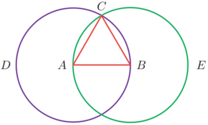

Proposizione I
Proposition I.1. We may construct an equilateral triangle from a given line segment.
Proof. Given a line segment AB, form two circles: one with center A and radius AB, the other with center B and radius AB. Let C be a point where the circles intersect. As radii of the first circle, AB ≌ AC. As radii of the second circle, BC ≌ BA = AB. By CN1, AC ≌ BC. The three segments AC, AB, BC are thus congruent to one another, and the triangle ΔABC is equilateral.□
The construction in this proposition is directly used in propositions I.2, I.9, I.10, I.11, XI.11, and XI.22.
Critiques of the proof
It is surprising that such a short, clear, and understandable proof can be so full of holes. These are logical gaps where statements are made with insufficient justification. Since the first proof in the Elements is the one in this proposition, it has received more criticism over the centuries than any other.
Why does the point C exist? Near the beginning of the proof, the point C is mentioned where the circles are supposed to intersect, but there is no justification for its existence. The only one of Euclid’s postulate that says a point exists the parallel postulate, and that postulate is not relevant here. Indeed, some postulate is needed for that conclusion, such as “If the sum of the radii of two circles is greater than the line joining their centers, then the two circles intersect.” Such a postulate is also needed in Proposition I.22. There are models of geometry in which the circles do not intersect. Thus, other postulates not mentioned by Euclid are required. In Book III, Euclid takes some care in analyzing the possible ways that circles can meet, but even with more care, there are missing postulates.
Why is ABC a plane figure? After concluding the three straight lines AC, AB, and BC are equal, what is the justification that they contain a plane figure ABC? Recall that a triangle is a plane figure bounded by contained by three lines. These lines have not been shown to lie in a plane and that the entire figure lies in a plane. It is proposition XI.1 that claims that all parts of a line lie in a plane, and XI.2 that claims that the entire triangle lie in a plane. Logically, they should precede I.1. The reason they don’t, of course, is that those propositions belong to solid geometry, and plane geometry is developed first in the Elements, also, no doubt, plane geometry developed first historically.
Why does ABC contain an equilateral triangle? Proclus relates that early on there were critiques of the proof and describes that of Zeno of Sidon, an Epicurean philosopher of the early first century B.C.E. (not to be confused with Zeno of Elea famous of the paradoxes who lived long before Euclid), and whose criticisms, Proclus says, were refuted in a book by Posidonius. The critique is sound, however, and the refutation faulty. Zeno of Sidon criticized the proof because it was not shown that the sides do not meet before they reach the vertices. Suppose AC and BC meet at E before they reach C, that is, the straight lines AEC and BEC have a common segment EC. Then they would contain a triangle ABE which is not equilateral, but isosceles.
Zeno recognized that in order to destroy his counterexample it was necessary to assume that straight lines cannot have a common segment. Proclus relates a supposed proof of that statement, the same one found in proposition XI.1, but it is faulty. Proclus and Posidonius quoted properties of lines and circles that were never proven and never explicitly assumed as postulates.
The possibilities that haven’t been excluded are much more numerous than Zeno’s example. The sides could meet numerous times and the region they contain could look like a necklace of bubbles. What needs to be shown (or assumed as a postulate) is that two infinitely extended straight lines can meet in at most one point.